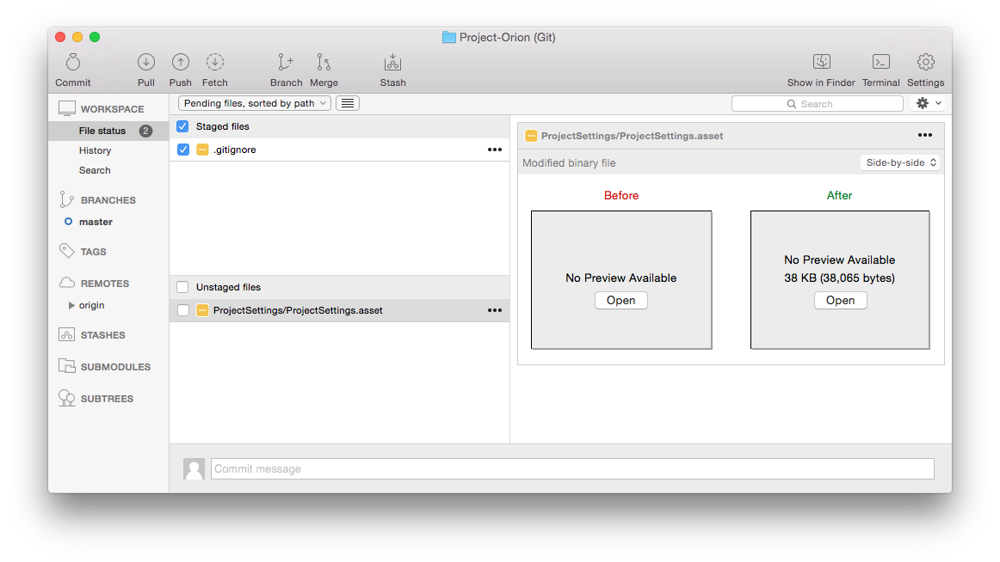
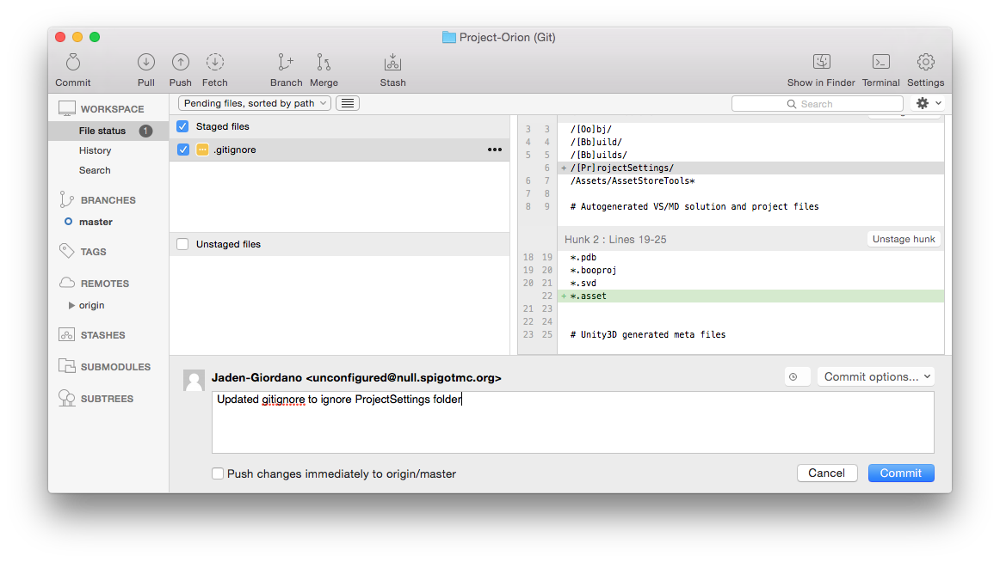
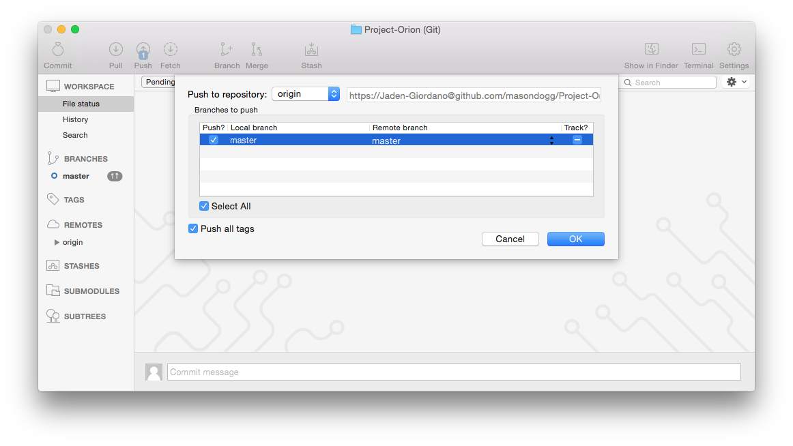
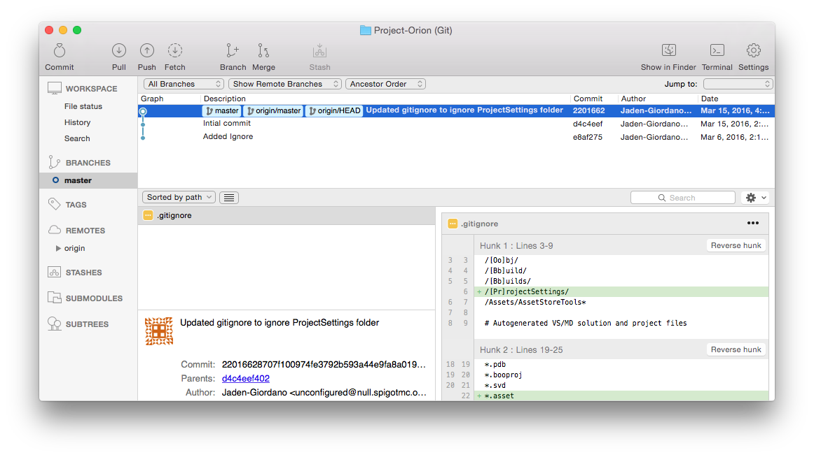
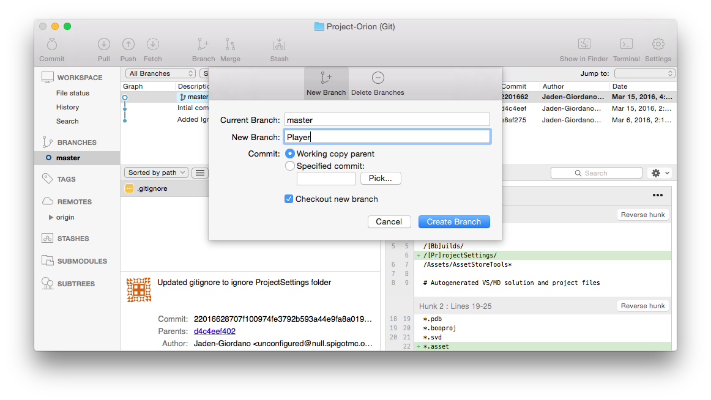
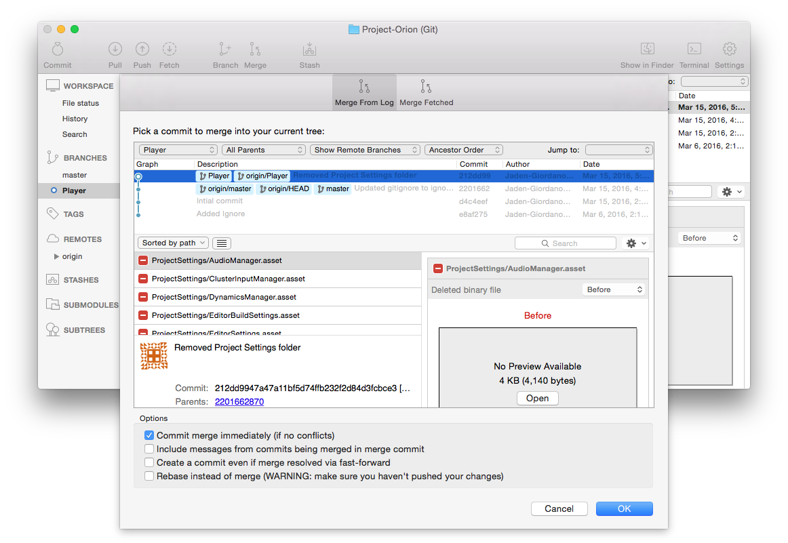
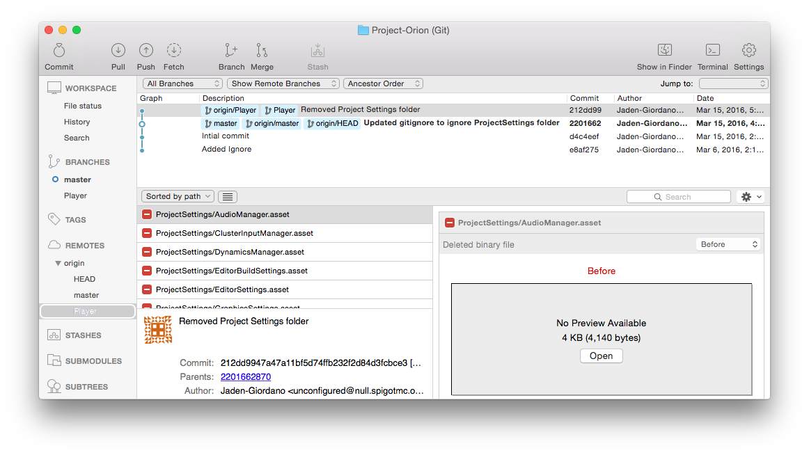

Table of Contents
Downloading and Installing Source Tree
Setting up Project in Unity
Pushing, Pulling, and Committing
Branches
Downloading and Installing Source Tree
Source Tree can be downloaded here: Source Tree Download
Once downloaded and installed, create an account or log in with Google. After logging in on the website and creating your license, return to the application and you should be able to continue. Click continue and you will be prompted with connecting a github account.

Use your Github login credentials to connect you Github account. Click continue then you will be prompted to clone a repository (repo), choose masondogg/Project-Orion and select a destination to save the repo to (best place would be a floder on your desktop or in your unity project folder), as shown here...


Click clone to continue, it will add the repo to your computer, now its time to get everything onto your computer. Double click the Project-Orion repo to open up the Git Ui panel. Then click on 'master' under 'Branches' on the left-side menu, then click 'pull'.
Setting up Project in Unity
Open up Unity and click 'Open', go to the location of the folder you set for the repo, and select it (double click it). Unity should take care or the rest.

Pushing, Pulling, and Committing
Throughout your use of Github Collaboration you will become very fond of Pushing, Pulling, and Committing. The difference between the three and there uses are as follows:
Pulling
As you've already learned to get the files from Github to your computer you had to 'pull', thats what this does, e.g. if someone mad a change and put it up then you would 'pull' to get those changes.
Committing
Committing is how you update your changes in the SourceTree Application, or a way of commenting on your changes and putting them into a timeline.
To commit your changes, select all the files, under 'Unstaged files', that you wish to commit and it will add it to the 'Staged files' section.
Now click commit and add a message describing the changes being committed.
Continued in 'Pushing'...
Pushing
After committing you will 'push' to upload your changes (commit) to the Github servers.
To push a commit, click 'push' and select the branch you wish to push the commit to.
Branches
A branch is basically a container for commits, which could be branched off the master (a branch), or any other branch. Think of it as a buffer for making changes. e.g.: You branch off the master to work on the assets for the player, commit to it so its on the server for others to branch off of if they wish, then once it's ready you can merge it to the master branch. Branches could be: Player, World, Minigame1, Minigame2, Menu, etc.
Creating a branch is simple. First select the commit you would like to branch off of...
The click branch, you will be prompted with a menu to set the name.
There will be a blue circle next to the current branch, so be careful when making commits and be sure you are on the correct branch when making changes (Ive messed up alot on this, kinda a mess to clean up when commiting get mixed up betwen branches).
Merging
Merging branches will combine the changes between the two, so dont worry unless you deleted one of the files they were working on it wont overwrite what they did (Github is really good at merging; boggles my mind kinda).
To merge branches, click 'merge', then select the commit you would like to merge.
Checkout Branches
To open another branch from Github (made by someone else), go under 'Remotes' on the left menu and right click on the branch you wish to checkout. Then click on 'Checkout...'...
